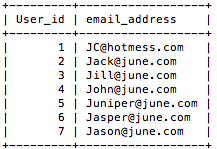

Functions - MySQL Relational Database
MySQL Functions
Prior to this section realize that we have already used two functions: NOW() (prints the current date and time) and SHA1() (encrpyts data). Also, I will breifly cover using aliases.
Using aliases
Sometimes when writing our queries we have field names which we might want to label as something else. It is for this reason that using an alias can save confusion and organize data more clearly (especially for users who aren't familiar with the database column names). Below, I will write a SELECT statement where I change the display of the field names for several of the records. However, the field names aren't actually being changed they will only show like this for our query.
Code:
SELECT id AS User_id, email AS email_address FROM Login;
As you can see our id field name and email field name now read as user_id and email_address.
String Functions
I will list several of the functions used in MySQL however I will not show or use examples for every single function. Below, is a list of string functions that can be used on strings.
- Concat(t1, t2): Will combine two or more text together.
- Concat_WS(s, t1, t2): Will combine a string and two or more text together.
- Length(t): Will write the number of characters in text.
- Left(t, y): Will write all the characters to the left of the y parameter.
- Right(): Will write all the of the characters to the right of the x parameter.
- Trim(): Removes any excess spaces at the beginning or end of the text.
- Upper(t): Captialize all of the text.
- Lower(t): Lowercase all of the text.
- Replace(): Replace one string with another one.
- Substring(t, x, y): Will substitute a part of the string (t) based on a position (x) and for a certain length (y).
Numeric Functions
These are a list of functions which can be used to manipulate integers and perform mathetical functions on existing records.
- Abs(): The absolute value of n (no negative).
- Ceiling(): n Rounded up.
- Floor(): n Rounded down.
- Format(n1, n2): n1 formated by n2 places and commas for every 3 numbers.
- Mod(n1, n2): The remainder of dividing n1 by n2.
- Pow(n2, n2): n1 to the power of n2.
- Rand(): A random number between 1 and 10.
- Round(n1, n2): n1 Rounded to n2 places.
- Sqrt(): The square root of n.
Date Functions
These functions are useful for tracking and formating time and/or dates.
- Date(dt): Displays the date value of dt.
- Hour(dt): Displays the hour value of dt.
- Minute(dt): Displays the minute value of dt.
- Second(dt): Displays the second value of dt.
- Dayname(dt): Displays the day name value of dt.
- Dayofmonth(dt):Displays the numeric day of the month for dt.
- Monthname(dt): Displays the numeric month for dt.
- Year(column): Displatys the year value of dt.
- Curdate(): The current date.
- Curtime(): The current time.
- Now(): The current date and time.
Previous Page Next Page